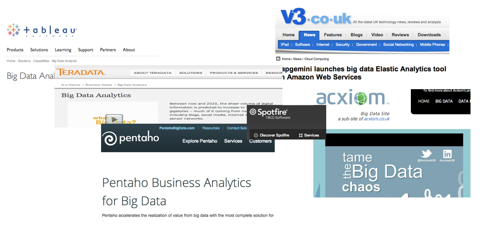
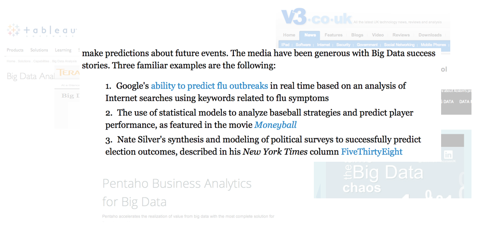

Big Data
Exploring the myth
Denise Xifara
DECODED, 28 Aug 2013

Big Data is Sexy

Big Data is Sexy
and insightful...
So, what's the problem?
Big Data is 'BIG'
Storage
Any object, wholly or partially immersed in a fluid, is buoyed up by a force equal to the weight of the fluid displaced by the object.
— Archimedes of Syracuse
- Where?
- How?
Storage
- Where?
Storage
- How?
Management
Understanding
I shut my eyes in order to see truth. -Paul Gauguin
- What?
- How?
- So...?
Understanding
What?
Understanding
How?
Understanding
So?
Understanding
The enemy of Big is Bigger
Pipelines
{{sub-heading}}
- {{item 1}}
- {{item 2}}